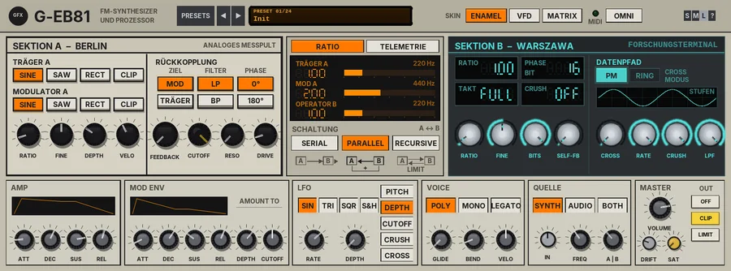

G EB81
A two-deck FM synthesiser and audio processor: an analogue cross-modulation console with an overdriven feedback loop, coupled to a low-bit digital operator with sample-rate reduction and bit crush.

Overview
G EB81 is an eight-voice FM synth dressed as one heavy Eastern Bloc rack. On the left, SEKTION A - BERLIN is a laboratory test console: a carrier and a modulator with analogue-style waves, phase modulation and an overdriven feedback loop through a resonant filter. It runs at twice the sample rate, so it is raw but never accidentally digital. On the right, SEKTION B - WARSZAWA is a research terminal: a single operator on a low-bit phase accumulator, with sample-rate reduction and bit crushing built into its feedback path. It runs at the host rate and aliases on purpose.
The ROUTING keys (SCHALTUNG) couple the two decks - A into B, B into A, or round in a loop - and the CROSS knob sets how strongly, as phase modulation or as ring modulation. The A | B knob balances the two decks at the output.
It also works as an effect. In AUDIO mode the track's own audio input (no side-chain routing needed) drives the synth: it becomes the modulator of Carrier A and replaces Operator B's oscillator in the crush chain, for ring modulation, phase-bent and crushed audio. In BOTH mode you play MIDI notes and the audio is heard through them.
Reach for it for
- Metallic FM basses, bells and leads with an industrial edge
- Aliasing, stepped and bit-crushed digital tones on purpose
- Wild resonant feedback sweeps and drones
- Ring modulating, phase-bending or crushing a vocal, drum loop or guitar
- Playing an audio track through MIDI notes (BOTH)
- IDM blips, clicks and glitchy percussion
Loading and playing it
- Insert G EB81 on a track. With QUELLE on SYNTH (the default) it is an instrument and needs no audio on the track.
- Arm the track for recording and set its input to your MIDI keyboard, or draw MIDI notes into an item on the track. The MIDI lamp in the header flashes when notes arrive.
- Pick a preset from the preset display, or start from Init and build a sound.
- If you play on a particular MIDI channel, click the OMNI key and choose it; OMNI listens to all 16.
- To process audio instead, put G EB81 on an audio track (or a track with audio items) and press AUDIO in QUELLE: the track's audio becomes the source. Its output replaces the dry audio, so use a send or a copy of the track if you want to blend it with the original.
Controls
The header
- PRESETS
- Opens the full preset list.
- ◄ / ►
- Step to the previous or next preset (wrapping round).
- Preset display
- Shows the preset number and name. Click it for the preset list too.
- SKIN: ENAMEL / VFD / MATRIX
- The look of the panel: light industrial enamel, cold gas-discharge display, or military LED matrix. Each deck keeps its own identity in every skin. Looks only - the sound does not change. Saved with the project.
- MIDI
- Lights when a note arrives.
- OMNI / CH
- The MIDI channel. Click for a menu: Omni (all channels) or Channel 1 - 16.
- S / M / L
- Panel size: small, medium or large. The panel also scales to fit the plugin window.
- ?
- Opens a pop-up with the design credit, the GFX website address and the address of this manual. Click anywhere to close it.
SEKTION A - BERLIN
- TRÄGER A: SINE / SAW / RECT / CLIP
- The carrier's wave: a sine, a soft saw (built from its first four harmonics), a full-wave rectified sine, or a hard-driven, clipped sine.
- MODULATOR A: SINE / SAW / RECT / CLIP
- The modulator's wave, the same four choices.
- RATIO
- The modulator's frequency against the note, 0.5 to 16 in steps of 0.5 (2 by default). Whole numbers give harmonic tones; with FINE you get bells and clangs.
- FINE
- Fine offset to the ratio, -0.5 to +0.5 (0 by default). Small offsets make the tone beat and shimmer.
- DEPTH
- The modulation index, 0 to 100% (30% by default), up to an index of 10: from a pure carrier to a bright, buzzing tone.
- VELO
- How much playing harder adds to DEPTH, 0 to 100% (40% by default).
- RÜCKKOPPLUNG: ZIEL MOD / TRÄGER
- Where the feedback loop goes back in: the modulator's phase (MOD, the default) or the carrier's (TRÄGER).
- FILTER LP / BP
- The loop filter's type: low-pass or band-pass.
- PHASE 0° / 180°
- The feedback's polarity, normal or inverted. Inverted feedback gives a hollower, different set of overtones.
- FEEDBACK
- How much of the deck's output is fed back into the phase, 0 to 100% (0 by default). Phase feedback cannot run away in level: it turns a sine into a saw-like and then a noisy, chaotic tone.
- CUTOFF
- The loop filter's frequency, 40 Hz to 18 kHz (18 kHz by default). The filter is in the audio path too, so it sweeps audibly; with FEEDBACK up the sweeps become wild and resonant.
- RESO
- The loop filter's resonance, 0 to 100%.
- DRIVE
- An overdriven op-amp stage in the loop, 0 to 100% (10% by default): an asymmetric soft clip that adds grit and even harmonics.
SEKTION B - WARSZAWA
The data grid at the top shows RATIO, PHASE (bits), TAKT (the hold rate in kHz, or FULL) and CRUSH (bits, or OFF) as LED digits. The STUFEN window draws the stepped wave that the current settings make.
- RATIO
- Operator B's frequency against the note, 0.5 to 16 in steps of 0.5 (1 by default).
- FINE
- Fine offset to the ratio, -0.5 to +0.5.
- BITS
- The phase resolution, 4 to 16 bits (16 by default). 16 is smooth; 4 turns the sine into a 16-step staircase.
- SELF-FB
- Feedback from B's crushed output back into its own phase, 0 to 100% (0 by default). The loop is lopsided (the positive half feeds back harder), for gritty, buzzy tones.
- DATENPFAD: PM / RING (CROSS MODUS)
- How the decks are coupled by CROSS: phase modulation (PM) or ring modulation (RING).
- CROSS
- The amount of coupling between the decks, 0 to 100% (0 by default). Which way it goes is set by ROUTING.
- RATE
- Sample-rate reduction (sample and hold), 200 Hz to 48 kHz; FULL (the default) is off. Low rates alias and fold the tone into metallic, lo-fi shapes.
- CRUSH
- Bit depth of B's output, 2 to 16 bits; OFF (16, the default) is off.
- LPF
- The terminal low-pass filter on B's output, 200 Hz to 20 kHz; OPEN (the default) is off. Use it to tame the aliasing.
The display and ROUTING
- RATIO / TELEMETRIE
- The display page. RATIO shows TRÄGER A, MOD A and OPERATOR B as ratios, as frequencies for the last note played, and as bars. TELEMETRIE shows the live waveform, a CLIP warning when the output's soft knee is holding the peaks down, and a STUFEN bar showing how much of the sound is in its steps (aliasing), with the phase bits, rate and crush settings.
- SCHALTUNG A ↔ B: SERIAL / PARALLEL / RECURSIVE
- How the decks are wired, drawn under each key. SERIAL: A modulates B (A into B's phase, or B times A in RING). PARALLEL (the default): both decks mixed, and B crosses into A's carrier. RECURSIVE: A into B and B's output back into A's modulator, through a safety limiter so the loop stays bounded.
AMP
The volume envelope of each note, drawn in the window above the knobs.
- ATT
- Attack, 0.5 ms to 5 s (2 ms by default).
- DEC
- Decay to the sustain level, 5 ms to 8 s (400 ms).
- SUS
- The level held while the key is down, 0 to 100% (80%).
- REL
- Release after the key is let go, 5 ms to 8 s (300 ms).
MOD ENV
- ATT / DEC / SUS / REL
- A second envelope, with the same ranges (1 ms, 500 ms, 30% and 400 ms by default).
- AMOUNT TO: DEPTH
- How much the envelope adds to DEPTH, -100 to +100% (+30% by default), up to 10 more of index. This is what makes FM tones bright at the start and mellow as they decay.
- AMOUNT TO: CUTOFF
- How far it moves the loop filter's CUTOFF, -100 to +100% (up to six octaves either way).
LFO
- SIN / TRI / SQR / S&H
- The LFO's shape: sine, triangle, square or sample-and-hold (a random step each cycle).
- RATE
- 0.05 to 30 Hz (4 Hz by default).
- DEPTH
- 0 to 100% (0 by default, so the LFO is off until you turn it up).
- PITCH / DEPTH / CUTOFF / CRUSH / CROSS
- The destination (DEPTH by default): vibrato (up to 2 semitones), the modulation index, the loop CUTOFF (up to four octaves), B's crush chain (fewer bits and a lower RATE), or the CROSS amount.
VOICE
- POLY / MONO / LEGATO
- POLY: eight voices. MONO: one voice, last-note priority; letting go returns to a note still held, and every new note restarts the envelopes. LEGATO: as MONO, but notes played while another is held slide on without restarting the envelopes.
- GLIDE
- Portamento, 0 to 2000 ms (0 by default): the pitch slides from the previous note.
- BEND
- Pitch-bend range, 0 to 24 semitones (2 by default).
- VELO
- How much velocity changes the volume, 0 to 100% (50% by default).
QUELLE (source)
- SYNTH / AUDIO / BOTH
- SYNTH: the MIDI voices only (the default). AUDIO: the track's audio drives one always-on voice (see below). BOTH: the MIDI voices, with the audio added to both decks' modulator inputs.
- IN
- The input gain for AUDIO and BOTH, -24 to +24 dB (0 dB by default). The input is summed to mono.
- FREQ
- The carriers' pitch in AUDIO mode, 20 to 2000 Hz (110 Hz by default), used while no MIDI note is held.
- A | B
- The balance of the two decks, 0 to 100% (35% by default): 0% is SEKTION A only, 50% both at full level, 100% SEKTION B only. Berlin sits a touch to the left and Warszawa a touch to the right.
MASTER
- VOLUME
- The overall level, -24 to +6 dB. The output bus has a soft knee above -6 dBFS that never passes -1 dBFS, so big chords stay clear of the output stage.
- DRIFT
- See Drift below.
- SAT
- Band saturation on the way out: only the lows and highs are saturated (the mids stay clean), with a soft curve that loosens as the level rises.
- OFF / CLIP / LIMIT (OUT)
- The final stage: nothing, a soft clipper (no latency, the default), or a lookahead limiter (3 ms latency, compensated by REAPER), both holding peaks at -0.3 dBFS.
Drift
DRIFT (0 - 100%, 25% by default) makes the rack behave like old hardware: the tuning wanders, the modulator and Operator B drift against the carrier (slow FM beating), the loop cutoff and the terminal LPF wander, the hold clock breathes, and every note lands slightly differently in tune. At 0% everything stays exactly where you set it.
Knobs: drag up or down (Shift for fine moves) or use the mouse wheel; double-click to reset a knob to its default. A knob's value shows while you touch it.
Playing it from MIDI
G EB81 responds to notes with velocity, pitch bend (range set by BEND), the mod wheel (CC1, which adds up to 4 to the modulation index), the sustain pedal (CC64) and all-notes-off (CC120 / CC123).
Using the audio input
The audio comes straight in on the track's own input pins, like any effect, so there is no side-chain to set up: put G EB81 on the track that holds the audio.
- AUDIO: the input (summed to mono, through IN) drives a single voice that is always on. It is the modulator of Carrier A, and the bare carrier is taken away, so a small DEPTH is a ring modulator and more DEPTH bends the phase of the input. It also replaces Operator B's oscillator in the crush chain (RATE, CRUSH, LPF), where SELF-FB becomes an amplitude feedback loop. The carriers sit at FREQ, or follow the last MIDI note held, so you can play the ring-modulator pitch from a keyboard. The amp envelope is not used; switching to AUDIO stops any MIDI voices.
- BOTH: the MIDI voices play as normal, and the input is added to both modulator inputs. You only hear the input through notes you play, shaped by their envelopes - a way to make an audio track speak through the synth.
- A | B chooses which deck you hear: towards A for ring modulation and phase bending, towards B for the crushed, sample-held version.
- There is no dry signal in the output. To blend, run G EB81 on a send or a duplicate of the track.
Presets
A preset sets every synth control (the two decks, routing, source, envelopes, LFO, voice, DRIFT and VOLUME). The MIDI channel, SAT, the output stage, the skin and the display page are left as they are.
- Init
- A plain sine-on-sine FM tone at ratio 2, PARALLEL routing, no feedback or crush.
- Stahlwerk Bass
- A saw-modulated mono bass with a resonant, overdriven feedback loop and a little 6-bit B ring-crossed underneath; short glide.
- Glas Glocken
- Glassy bells: an inharmonic ratio of 3.5, a long mod envelope and a long decay.
- Rechenzentrum
- Clipped carrier in RECURSIVE routing with a 5-bit, crushed B: short computer-room blips.
- Plattenbau Pad
- A slow saw pad with gentle feedback, a slightly detuned B and an LFO slowly moving the cutoff.
- Funkstörung
- Radio interference: a 4-bit B with heavy self-feedback, RECURSIVE, and a sample-and-hold LFO on CROSS.
- Tauwetter
- A slow, thawing texture: band-pass feedback loop, long envelopes and a slow triangle LFO on DEPTH.
- Kassette Bit
- Lo-fi keys: B at 8 bits and 11 kHz with an LPF, and DRIFT at 70%.
- Warschau Arp
- A short, plucky FM tone with a ring-crossed 7-bit B, made for arpeggios.
- Audio Crusher (FX)
- AUDIO source, SEKTION B only: the input sample-held at 8 kHz, crushed to 7 bits and filtered.
- Ring Station (FX)
- AUDIO source, SEKTION A only: a ring modulator on the input at 440 Hz (or the note you hold).
- Gusseisen Lead
- A saw lead with driven feedback, vibrato from the LFO, LEGATO and glide.
- Hochspannung Bass
- Clipped carrier and rectified modulator, heavy band-pass feedback into the carrier: an aggressive mono bass.
- Röhrenglocke
- A tubular bell: ratio 1.5 slightly detuned, a long decay.
- Datenstrom
- A data stream: a 4-bit, crushed B in RECURSIVE routing, with a sample-and-hold LFO on CRUSH.
- Signalturm Lead
- A bright FM lead in SERIAL routing, with vibrato, LEGATO and glide.
- Kühlturm Drone
- A deep drone: low ratio, heavy resonant feedback and a very slow LFO on the cutoff.
- Lochkarte
- Punched-card clicks: a short, crushed 4-bit B with the mod envelope on the cutoff.
- Ostblock Brass
- A saw brass with a slow-attack mod envelope and gentle feedback.
- Tiefbau Sub
- A clean, deep mono sub with a little drive and a short glide.
- Morsezeichen
- Short, high bleeps from ratio 7, with a ring-crossed 6-bit B.
- Schaltkreis Perc
- Metallic circuit percussion: an inharmonic ratio, heavy band-pass feedback and a very short envelope.
- Sprechfunk (FX)
- BOTH source: play notes to hear the input through a crushed, walkie-talkie FM voice (IN +6 dB).
- Spannungsfeld
- A slowly evolving pad with full CROSS, heavy self-feedback and RECURSIVE routing.
Tips
- Start with FEEDBACK at 0 and sweep DEPTH and RATIO to find a tone, then bring FEEDBACK and RESO in and sweep CUTOFF.
- For classic bell and electric-piano tones, keep DEPTH low, set MOD ENV DEPTH high, and use a short mod envelope with a longer amp decay.
- The LPF in SEKTION B is the quickest way to keep the aliasing musical: crush hard, then pull the LPF down until it sits.
- Try the same sound in all three ROUTING modes with CROSS at about 30% - they give very different results.
- For a ring modulator on a vocal or drum loop, use AUDIO, A | B at 0%, DEPTH around 5%, and play notes to set the pitch.
- Use the TELEMETRIE page to see when the output knee is working (CLIP) and lower VOLUME if it is lit all the time.
File: gfx-g-eb81.jsfx